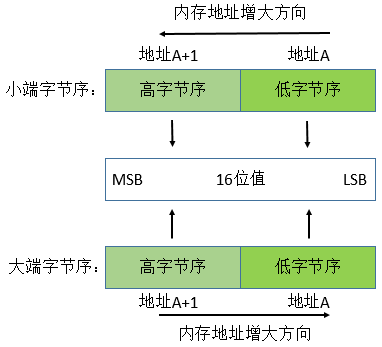

本文对套接字地址结构，什么是值-结果参数，还有字节排序函数和字节操作函数做了简单的介绍。
套接字地址结构
IPv4套接字地址结构通常也称为“网际套接字地址结构”，下面是其POSIX定义
1.IPv4地址和TCP或UDP端口号在套接字地址结构中总是以网络字节序来存储；
2.sin_zero字段未曾使用，不过在填写这中套接字地址结构时，总是把该字段置为0；
3.套接字地址结构仅在给定主机上使用；
值-结果参数
当往一个套接字函数传递一个套接字地址结构时，该结构总是以引用形式来传递，也就是说传递的是指向该结构的一个指针。
（1）从进程到内核传递套接字地址结构的函数有三个：bind、connect、sendto。这些函数的一个参数是指向某个套接字地址结构的指针，另一个参数是该结构的整数大小，例如
（2）从内核到进程传递套接字地址结构的函数有4个：accept、recvfrom、getsockname和getpeername。这4个函数的其中两个参数是指向某个套接字地址结构的指针和指向表示该结构大小的整数变量的指针。
字节排序函数
小端字节序（little-endlian）：将低序字节存储在起始地址；
大端字节序（big-endian）：将高序字节存储在起始地址；
主机字节序：整数在内存中保存的顺序；
网络字节序：是TCP/IP中规定好的一种数据表示格式，他与具体的CPU类型、操作系统等无关，从而保证数据在不同主机之间传输时能够被正确解释。网络字节序采用big-endian。

字节操纵函数
操纵多字节字段的函数有两组，一组是名字以b开头的函数起源于4.2BSD几乎所有现今支持套接字函数的系统仍然提供它们；另一组是以mem开头的第二组函数起源于ANSI C标准，支持ANSI C函数库的所有系统都提供它们。
|
|